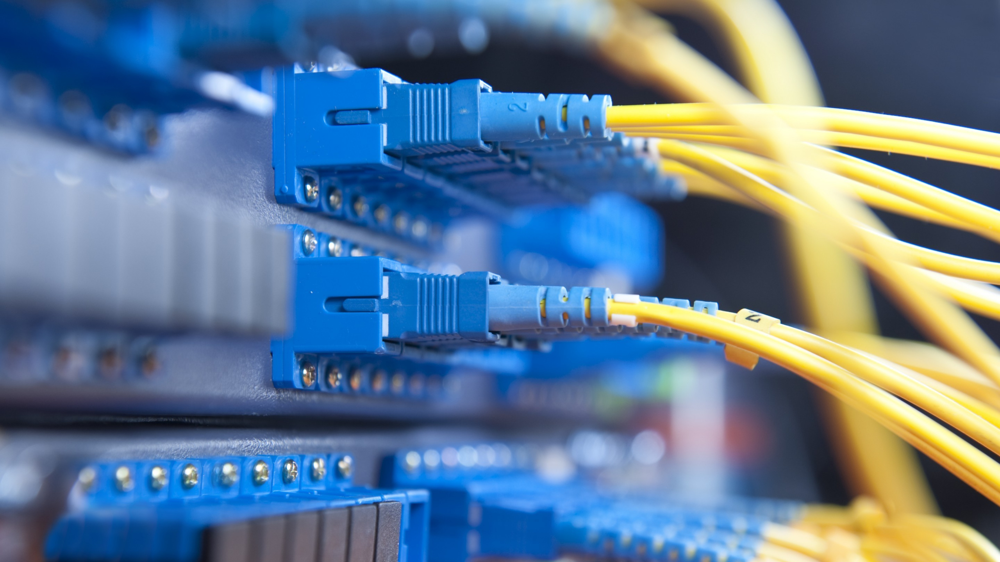

量子通信是当前中国科学技术领域中的重要研究方向，也是未来信息技术发展的关键。在这个国庆节，我们不妨借此机会回顾中国在量子通信方面取得的成就，并展望未来的发展前景。中国在量子通信领域取得的成就是世界瞩目的，这不仅代表着国家科研实力的提升，更体现了中国在推动信息技术革命中的重要作用。
首先，我们需要了解什么是量子通信。量子通信是一种利用量子力学原理进行信息传递的新技术。与传统的通信方式不同，量子通信通过量子态的叠加和纠缠来实现信息的安全传输。它的核心优势在于其高安全性，因为量子态在传输过程中无法被复制或窃取。一旦有人试图窃听，量子态将会发生变化，从而让信息的接收方察觉到。这样的技术不仅在理论上保证了通信的绝对安全，更为实际应用提供了无限可能。
中国在量子通信领域的研究起步较早，并且已经取得了许多突破性进展。例如，中国成功发射了世界上首颗量子科学实验卫星“墨子号”，它是全球首个实现星地量子密钥分发的卫星，这标志着中国在量子通信领域已经位居世界前列。“墨子号”的成功不仅展示了中国在卫星通信和量子物理技术方面的强大实力，更为未来量子通信网络的建设打下了坚实基础。
除了“墨子号”卫星，中国还在多个城市建立了量子通信实验网，实现了长距离的量子密钥分发。比如在北京和上海之间，中国建成了世界上最长的量子通信干线——“京沪干线”，这条干线全长2000多公里，实现了城际量子通信的实际应用。这一成就为中国的量子通信技术应用于金融、政务等领域奠定了基础，也为全球量子通信网络的搭建提供了中国方案。
量子通信的核心在于量子力学的基本原理：量子叠加和量子纠缠。这使得在信息传输过程中，一旦有第三方试图窃听，通信内容就会立即被篡改或破坏， 从而确保了信息的绝对安全。相比传统加密方式，量子通信从理论上来说是“不可破解”的，这在国防、金融、政务等领域将具有无可估量的应用价值。
中国的高速量子密钥分发系统的问世，意味着这一技术正从实验室走向实际应用。它不仅推动了量子网络的建设，还为未来的全球信息传输建立了新的标准。 中国量子科学技术专家表示，这一系统的成功将对量子通信的规模化应用产生深远影响，为全球的通信安全提供强大支持。
此外，中国在量子通信的基础设施建设上也不断发力。例如，2016年，中国发射了世界上第一颗量子通信卫星“墨子号”，开创了天地一体化量子通信网络的先河。 2020年，中国正式启动了世界上最大的量子通信网络——京沪干线，全长2000多公里，连接了北京、上海等重要城市。这些举措显示了中国在量子通信领域的长期布局和远见卓识
在国庆节这个特殊的日子里，我们有理由为中国在量子通信领域的成就感到自豪。这些成就的背后，是无数科研人员的辛勤努力和国家对于科技创新的坚定支持。中国政府一直以来高度重视量子通信的发展，并在科研资金、人才培养、国际合作等方面给予了强有力的支持。这些政策措施不仅确保了中国在量子通信领域的领先地位，也为未来进一步的发展提供了充足的动力。
未来，量子通信将会在更多领域得到应用，不仅限于政府、金融等高安全性需求的领域，还可能延伸到智能城市、物联网等多个方面。随着技术的不断成熟和网络的逐渐完善，量子通信有望成为未来信息技术的基础架构之一。中国有着广阔的市场和巨大的技术潜力，相信在不久的将来，中国将在全球量子通信网络的建设中发挥更大的作用，并推动这一领域的发展迈上新台阶。
总而言之，量子通信是中国科技发展的重要体现。在国庆节这个特别的日子，我们不仅要回顾中国在这一领域取得的辉煌成就，更要展望未来的发展前景。相信随着时间的推移，中国在量子通信领域将继续引领全球，为构建一个更加安全、智能的未来世界做出贡献。让我们共同为中国科技的腾飞喝彩，为量子通信的美好未来加油。